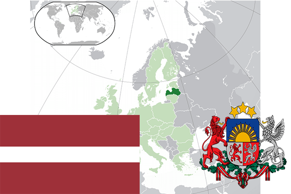

To`liq nomi: Latviya Respublikasi
Region: Sharqiy Yevropa
Qonunchilik shakli: Respublika
Mustaqillik kuni: 4-may 1990-yil (Sobiq Ittifoqdan)
Poytaxt: Riga
Maydoni: 64 589 km² (dunyoda 122 -o`rinda )
Chegaradosh davlatlari: Estoniya, Rossiya, Belorus, Litva
Aholisi: 1,953,200 (dunyoda 148 - o`rinda, 2016 -yil roʻyxat)
Aholi zichligi: 34,3/km²
Aholining o`rtacha yoshi: 71,75 yil (77,1 ayollar,66,4 erkaklar)
Rasmiy tili: Lativ tili
Dini: Xristian
Pul birligi: Yevro
Telefon prefiksi: +371
Internet domen: .lv
Xalqaro tashkilotlarga a`zoligi: BMT (1991 – yildan), Yevropa Ittifoqi (2004-yildan), Shimoliy Atlantika Shartnomasi tashkiloti (2004-yildan)
Dengiz va okeanlarga chiqishi: Boltiq dengizi
YIM: Butun: $ 53.467 mlrd, Jon boshiga $ 27,291 (2017 - yil roʻyxati)
Yirik shaharlari: Riga, Daugavpils, Liepaya, Elgava, Yurmala